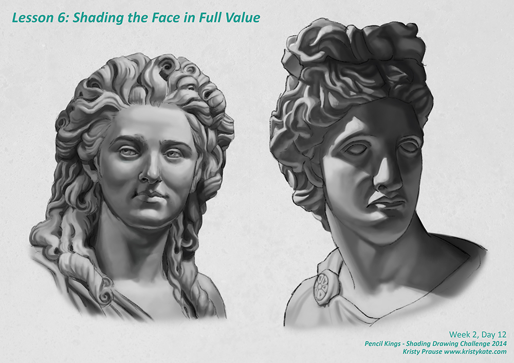
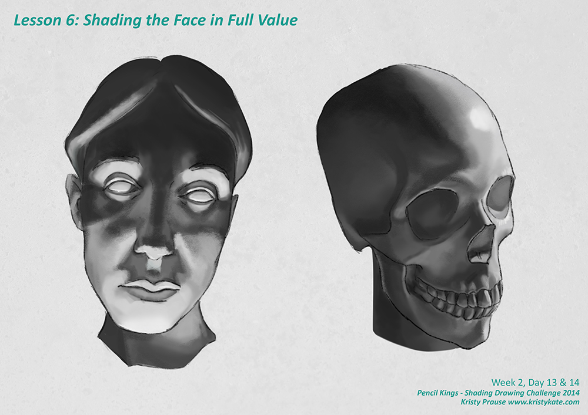

SDC - Shading the Face
For the month of September I'm taking part in Pencil Kings Shading Drawing Challenge, with instruction from the lovely Diane Kraus. You can see Diane's work on her website www.dianekraus.com.
This post covers my studies from Lesson 6: Shading the Face in Full Value. My earlier studies can be viewed in the following posts:
* Learning Values with the Shading Drawing Challenge (SDC)
* SDC - Planes and Blocking in the Shadow Value
* SDC - Shading Simple Objects
* SDC - Learning the Planes of the Head
* SDC - Blocking in the Shadow Value of the Head
+ + +
Shading the Face in Full Value
Another week has come to a close which means it's time to celebrate by shading the face in full value! Hooray!
I set myself the challenge to fully shade all the faces given to us as reference during the week. It was quite a big undertaking, but I found following the process of tackling each value one-by-one made the task a lot simpler to manage.
Here's the typical method I follow:
- Block in the shadow value
- Fill in the rest of the form with the mid tone
- Add the core shadow
- Add the cast shadow
- Add the reflected light
- Fill in the light areas
- Blend
- Refine edges (watch for soft and hard edges)
- Add highlights and small details
The order of these may change from time to time but essentially the simplest approach to shading the face (or any object for that matter) is by blocking in the large areas of light and shadow first before blending and then adding the highlights and finer details last. Think big to small.
(Note: Creating the underlying sketch has been omitted from this list as we've been provided with templates for the Shading Drawing Challenge in order to focus solely on values and shading.)
Below are the finished studies as well as a couple of .gifs showing the steps in my rendering. Click on the images if you'd like to view a larger version (they will open in a new window).
Drawing in the planes before shading, provides a good guide for defining the form with value in later steps.

While shading the above statues I quickly discovered that curls are difficult to manage (ie. evil). It can be really tricky to keep track of where you're up to and after a while your eyes get boggled. To help me keep track I decided to mask sections of their hair with a big black box, moving it along to reveal new sections of hair only once the current area was shaded. Crisis averted!
(Similarly, a grid can be used to plot out the curls too, but I personally find that they can add to the detail 'noise'.)

While shading these faces, I took the opportunity to play with texture brushes. In the above and below studies I used a mix of the Photoshop Hard Round and Charcoal brushes. I like how they break up that smooth, overly glossy look that's hard to avoid with straight up digital painting -- consider these my first steps into finding a more 'painterly' feel!
The girl in the above image is a great example of when learning the planes of the face can be especially handy. The reference photo had flattened the values, making her face appear very smooth and therefore tricky to define the form (this is very common in magazine photos). Thanks to using the planes as a guide, I was able to see the form and add volume back into her face. I've included a step-by-step image of her below:
Up next, we dive into a new week, this time covering the planes and shading of the human figure.
+ + +
Enjoy art? I'd love to hear from you! Connect with me by leaving a comment or getting in contact via Twitter or Facebook.